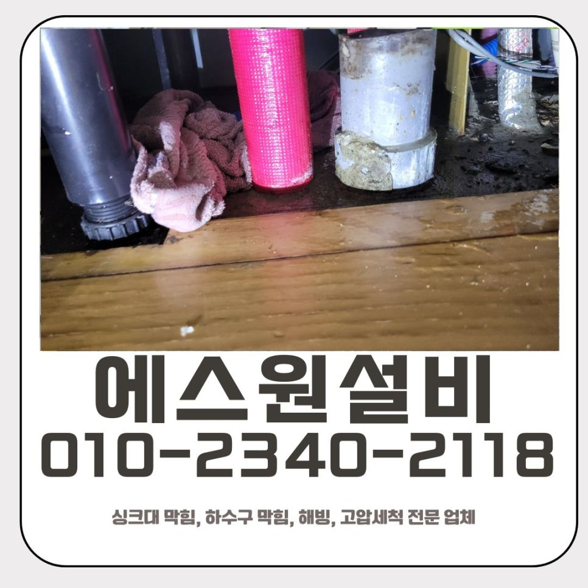
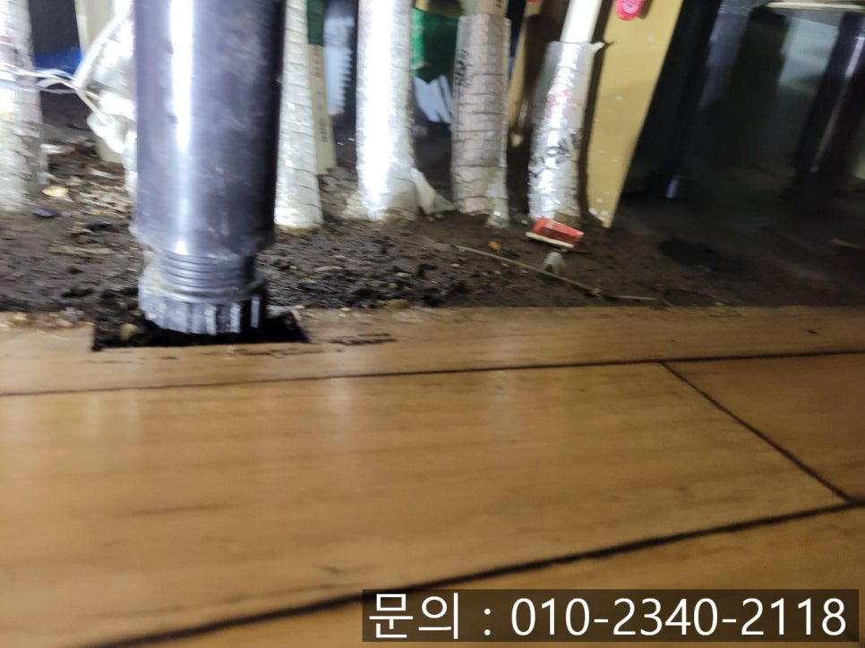
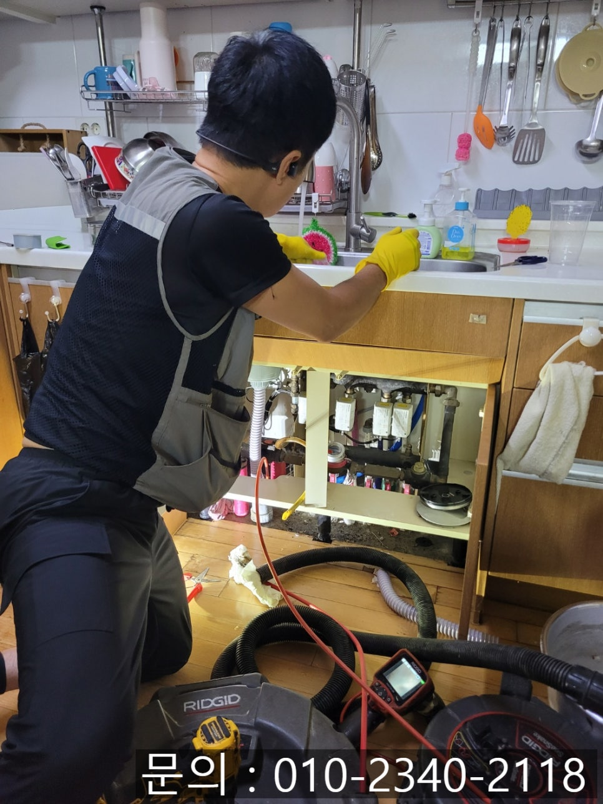
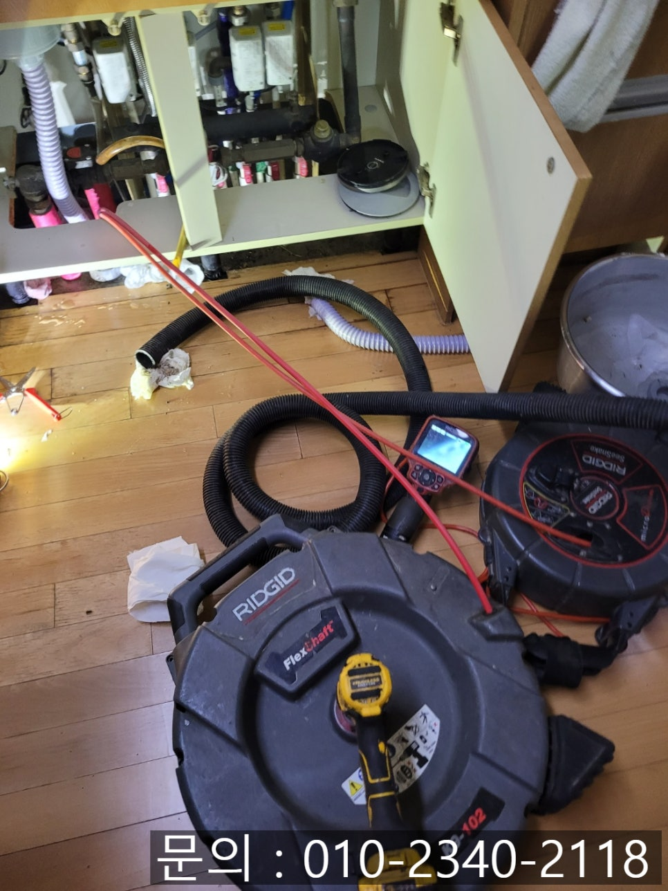
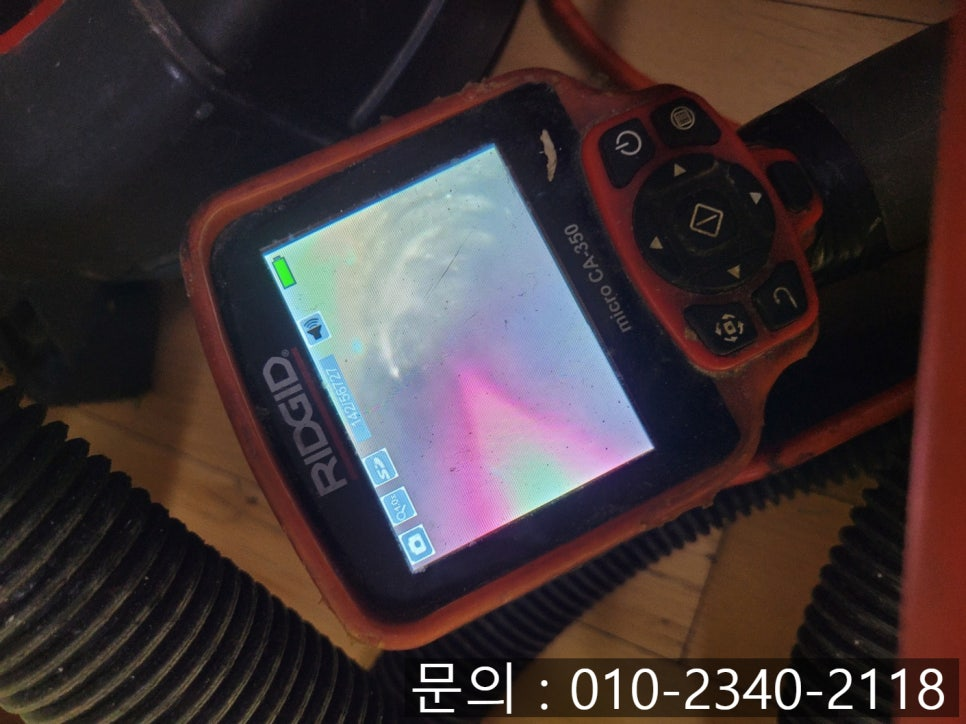
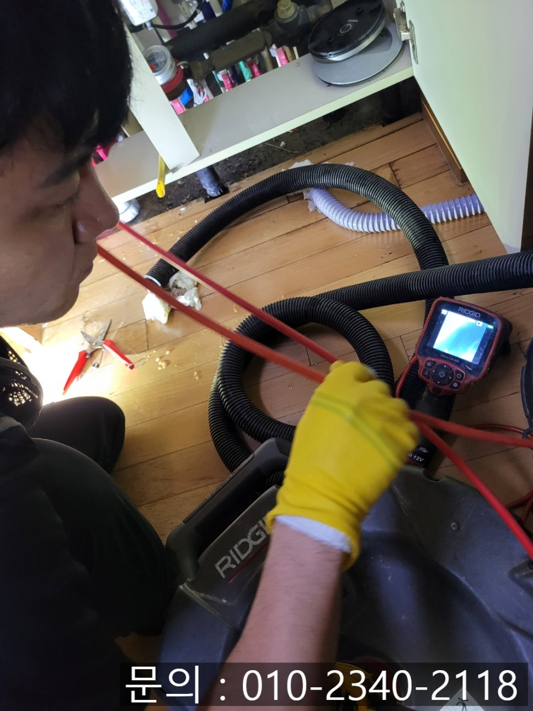
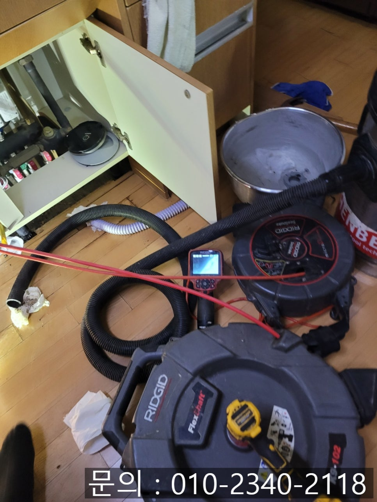

🏠 금암동 싱크대 막힘 오산 수청동 하수구 역류 물 넘침 해결 업체
오산 수청동 싱크대막힘 전문 시공 후기

📋 작업 개요
- 위치: 오산 수청동, 수청동, 오산
- 서비스 유형: 싱크대막힘, 하수구막힘, 배관막힘, 누수수리, 역류해결, 고압세척, 설비공사, 악취차단
- 작업 일시: 2025. 8. 18. 10:30
- 업체명: 하수구수사대 (010-5615-2118)
🔍 문제 상황
안녕하세요.
오산 수청동 하수구 역류 물 넘침 해결 업체 에스원 설비입니다.
한 가정집에서 "싱크대 물이 전혀 빠지지 않고 바닥이 좀 젖었어요. 물이 넘치는 것 같아요"라는 긴급 전화를 받았어요. 싱크대가 막히면 음식을 조리하고, 식기를 세척하는 일이 아예 중단되기 때문에 불편함이 이만저만이 아니에요. 여름철에는 그 불쾌함이 두 배 이상으로 커지죠.

🔎 원인 분석
💡 전문가 진단: 정밀 진단 장비를 사용하여 슬러지의 고착 여부를 판명하고 타격/세척 작업을 실시했습니다.
고객님과 약속을 잡고 금암동 싱크대 막힘 현장으로 방문 드렸습니다. 현장은 싱크대 물이 거의 "작은 풀장"처럼 고여 있었고, 물 표면엔 기름막이 동동 번들번들. 냄새까지 올라와서 주방에 오래 서 있기도 힘든 상태였어요.
게다가 주방 싱크대 주변 마룻바닥이 군데군데 들떠 있었고, 하 부장 안쪽은 흘러나온 물 때문에 축축하게 젖어있었어요. 주방이 이런 상태가 되면 위생에도 좋지 않지만, 무엇보다 아랫집으로 누수 피해가 번질 수 있어 굉장히 위험합니다. 만약 아래층까지 물이 스며들면, 도배 교체는 물론이고 피해 보상 문제로 공사가 커질 수 있어요.
2차 피해가 생가지 않도록 빠른 해결이 필요한 한시가 급한 상황이었어요. 곧바로 배관 내시경으로 내부를 정밀하게 검사하는 작업을 진행하였어요. 배관 내시경은 사람이 들어갈 수 없는 좁은 배관에 가는 케이블 선을 넣어 실시간으로 화면을 통해 내부를 확인해 볼 수 있는 전문 장비입니다.
내시경 카메라로 점검해 보니 화면에는 기름때와 음식물 찌꺼기가 한데 뭉쳐 배관을 꽉 채운 모습이 보였어요. 이런 찌꺼기는 시간이 지날수록 더 딱딱하게 굳어 제거가 점점 더 어려워집니다.

🔧 작업 과정
이럴 때 필요한 장비는 바로 "플렉스 샤프트" 장비입니다. 이 장비는 배관 벽면에 달라붙어 있는 찌꺼기와 기름때를 믹서기처럼 갈아내주는 방식으로 작동합니다. 샤프트 장비로 여러 차례 고속 회전하면서 여러 차례 슬러지를 잘게 부서 줬어요.
샤프트 장비로 갈려 나온 찌꺼기들은 석션기로 강력하게 흡입해 내주면서 배관 밖으로 완전히 제거해 줬어요. 이 작업으로 남아있는 찌꺼기들로 다시 막히게 되는 일을 완벽하게 차단해 주었어요.
배관 내시경으로 확인해 본 모습은 원래 새것에 가깝게 복원되었어요.
작업 후에는 물을 흘려내려보내봤는데 시원하게 쏴아~하면서 내려가는 물줄기를 보니 속이 다 시원해졌어요. 역류나 누수 걱정도 말끔히 해결되었습니다.
금암동 싱크대 막힘은 누수와 주방 바닥이 손상되는 등의 2차 피해로 이어질 수 있어요. 특히 아파트나 다세대 주택에서는 아랫집 누수 피해로까지 번질 수 있는 것을 생각해야 하기 때문에 문제가 발생한 것 같으면 최대한 빨리 전문 업체에 의뢰하는 것이 중요합니다.


✅ 작업 완료
에스원 설비는 전문 장비를 보유하고 있어 근본적으로 원인을 해결하는 것을 원칙으로 작업합니다. 막힘이 반복되거나 악취가 심하여 고민 중이시라면 오산 수청동 하수구 역류 물 넘침 해결 업체 에스원 설비로 연락 주세요!
경기도 오산시 오산로160번길 15 201-L16호




⚠️ 베란다 누수 및 방수 관리 방법
- ✅ 비가 많이 올 때 창틀 주변이나 아래층 천장에 얼룩이 생기는지 정기적으로 확인해 보세요.
- ✅ 우수관 주변 실리콘 마감이 들뜨거나 깨진 틈새가 있는지 손상 여부를 수시로 체크하세요.
- ✅ 베란다 바닥 타일의 줄눈(메지)이 소실되면 그 틈으로 물이 침투하여 누수가 유발됩니다.
- ✅ 누수 의심 증상 발견 시 방치하면 아래층 손실이 커지므로 즉시 전문가의 진단을 받으십시오.
💡 핵심 정리
- 확실한 장비 작업(내시경 점검 및 샤프트 스케일링)으로 원인을 뿌리 뽑습니다.
- 작업 후 1년 이내에 동일한 부위 재발 시 100% 무상 A/S 서비스를 보장합니다.
- 서울 · 경기 · 인천 전 지역에 24시간 언제든 긴급 출동할 수 있도록 항시 대기 중입니다.
❓ 자주 묻는 질문 (FAQ)
🚨 오산 수청동 싱크대막힘 문제로 고민이신가요?
정확한 원인 진단과 확실한 시공으로 재발 없는 해결을 약속드립니다.
24시간 긴급 출동 | 서울 · 경기 · 인천 전지역 | 1년 내 재발 시 무상 A/S